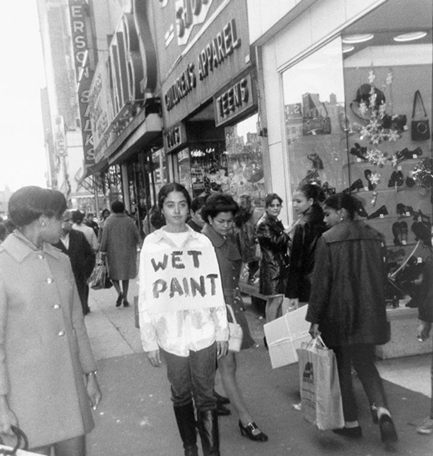

American conceptual artist, performer and philosopher.
Born in an African-American working-class family, Adrian Margaret Smith Piper
grew up in Harlem but was able to access higher education thanks to scholarships.
After graduating from the prestigious New York School of Visual Arts in 1969,
she immediately associated herself with conceptual art - an artistic movement that
gives prominence to the ideas conveyed by the artwork. However, her work stood out
because of its highly political dimension: as from 1970, the questions of race and
gender became central to her work, which echoed her experience as a black woman and
her attempts to be acknowledged and accepted as such. Many of her texts and videos
directly challenge the viewers or readers to take a stance.
Her Political Self-Portraits 1-3 (1978-1980) are a reinterpretation of her youth
in terms of belonging and exclusion: with her fairly light skin and straight hair,
she was not perceived as “black enough” in Harlem, while still being one of the only
African-Americans in the several schools she attended, where the racism she faced,
although latent, remained nonetheless hurtful. The artist is mostly known for her performance
art in the streets of New York: in the series Catalysis (1970-1971), she dressed in
foul-smelling clothes and sat on the subway or in a bookstore so as to prompt intense reactions,
both physiological and psychological, thus exceeding the purely intellectual reaction usually pursued
by conceptual art.
